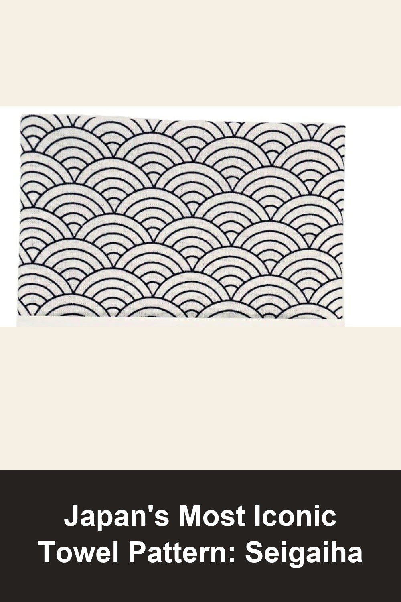
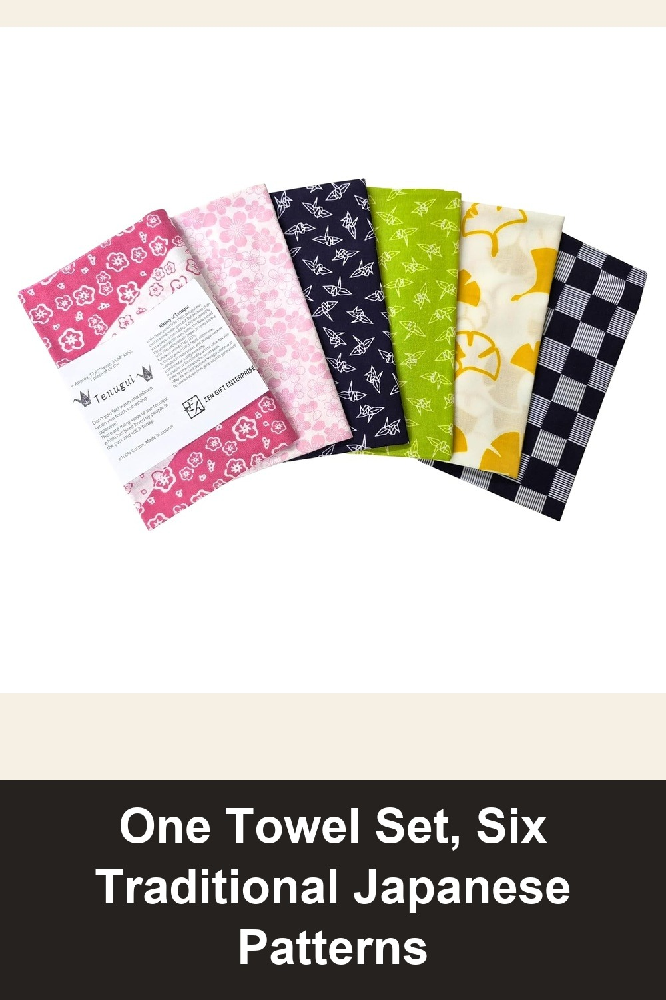
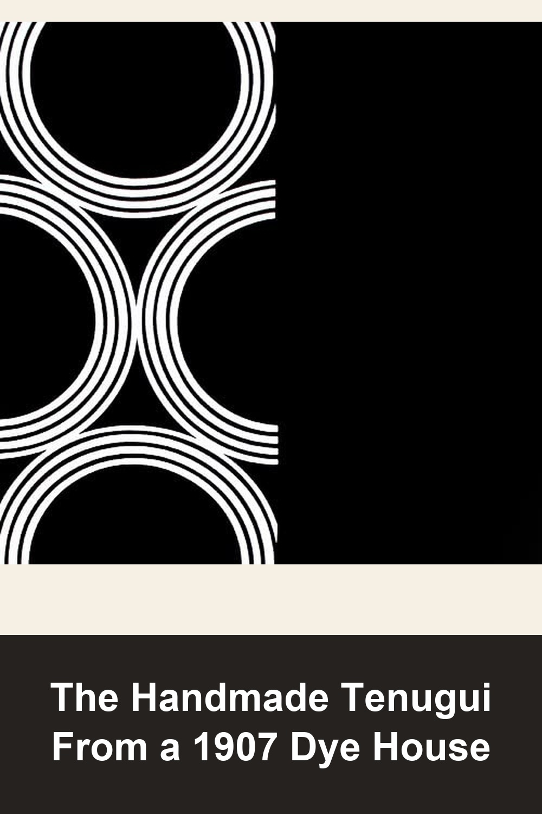

Japanese Tenugui Towel, 34.64"L x 12.99"W, Seigaiha Navy Blue on White
A traditional tenugui hand towel in the seigaiha 'blue ocean waves' pattern — one of Japan's oldest and most recognizable motifs. 100% cotton, made in Japan, quick-drying and gets softer with every wash.
This Japanese Tenugui towel did not disappoint! The dye job is excellent with vivid colors... It is very durable. My family has Tenugui towels that are decades old, and still look amazing and are reliable.— verified Amazon buyer
View on Amazon →
Japanese Tenugui Towel, 34.64"L x 12.99"W, Traditional 6 Patterns Set
A gift-ready set of six tenugui in Japan's most beloved motifs — cherry blossom, folded cranes, ginkgo leaves, and more. Thin, quick-drying, and reusable enough to replace a whole roll of paper towels.
I have been using these for about 6 months now instead of paper towels for all my household clean ups. They are easy to wash out and reuse. They clean up all kinds of messes... and don't tear or fray. Seriously these are the way to clean. And they are nice to look at too.— verified Amazon buyer
View on Amazon →
染の安坊 Anbo Tenugui Hand Towel, Half Ring (Black), 100% Cotton, Made in Japan
Hand-dyed one at a time using a technique called 'Tenassen' at a Tokyo dyeing workshop founded in 1907 — bold modern graphics made with the same hand-dyeing craftsmanship Japan has passed down for generations. No two are ever quite the same.
View on Amazon →